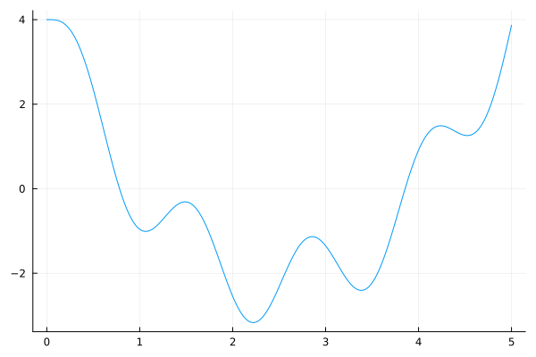
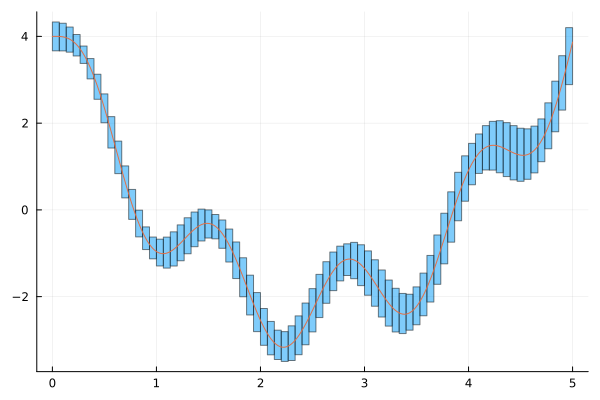
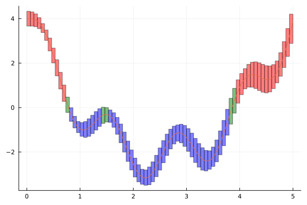
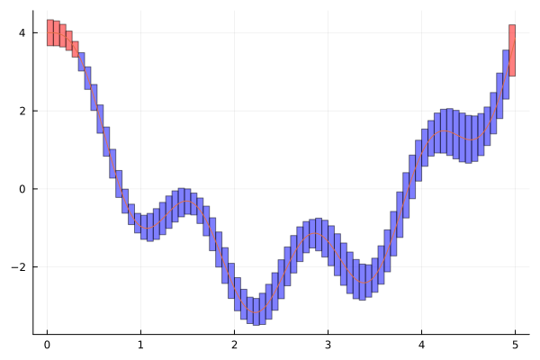
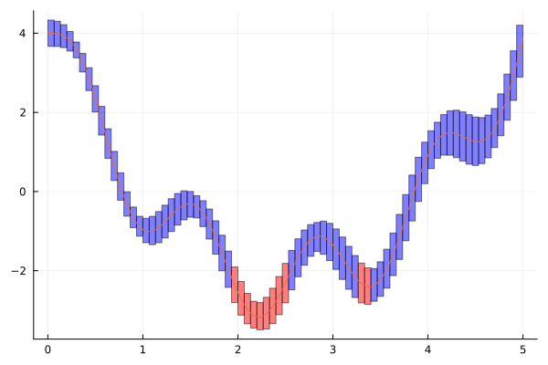

Week 7 Lecture 1: Interval functions and graph enclosures
Interval functions
Let
\[\mathbb{IR} = \{[a, b]: a \in \mathbb{R} \cup \{-\infty\}, b \in \mathbb{R} \cup \{+\infty\}\}\]
be the set of closed intervals, where $a$ is allowed to take the value $-\infty$ and $b$ the value $+\infty$. We then have the following definition
Let $f: \mathbb{R} \to \mathbb{R}$ be a real valued function. An interval valued function $\bm{f}: \mathbb{IR} \to \mathbb{IR}$ is called an interval extension of $f$ if
\[\mathcal{R}(f; [a, b]) \subseteq \bm{f}([a, b])\]
for any $[a, b] \in \mathbb{IR}$.
The definition doesn't require $\bm{f}([a, b])$ to be close to $\mathcal{R}(f; [a, b])$. For example the function which takes any input to the interval $[-\infty, +\infty]$ is an interval extension of any function. For $\bm{f}$ to be a useful interval extension of $f$ we of course need it to in some sense approximate $\mathcal{R}(f; [a, b])$.
In practical applications, functions with singularities are usually handled by returning an interval version of NaN. For IntervalArithmetic.jl this is represented by an NaI (Not-an-Interval), for Arblib.jl this is represented by a ball with NaN as midpoint (referred to as an indeterminate ball).
Both IntervalArithmetic.jl and Arblib.jl (as well as most other interval arithmetic packages) implement interval extensions of most trigonometric, exponential and logarithmic functions. For example, the following functions (and many more) are supported by both packages.
- $e^x$, $\log$, $e^x - 1$, $\log(1 + x)$, $\log_2$, $\log_{10}$.
- $\sin$, $\cos$, $\tan$, $\arcsin$, $\arccos$, $\arctan$.
- $\sinh$, $\cosh$, $\tanh$, $\operatorname{arcsinh}$, $\operatorname{arccosh}$, $\operatorname{arctanh}$.
In case of the IntervalArithmetic.jl package all of these functions are guaranteed to be correctly rounded, meaning that the output interval is guaranteed to be the tightest possible floating point interval (at the given precision) enclosing the true range of the function. For Arblib.jl there is no such guarantee. If the input interval is not too wide the output will in general be very tight, but for wider input the output can in some cases (depending on the function) be a bit of an overestimation.
Combined with arithmetic and composition, these implementations allow you to easily compute interval enclosure of a wide range of functions.
julia> using IntervalArithmetic, Arblibjulia> f(x) = sin(exp(1 + x^2)) / atan(coth(x - x^7 )) - sqrt(asin(x)) * x^2 * tanh(x)f (generic function with 1 method)julia> f(interval(0.5))Interval{Float64}(-0.38256670539827986, -0.3825667053982792, com, false)julia> f(Arb(0.5))[-0.3825667053982796626880623049230277242379388697015613738041508590166456866736 +/- 8.28e-77]
Arblib.jl also implements a large number of special functions. This for example includes
- The gamma function
- Exponential integrals
- The error function
- The Airy function
- The Bessel function
- Elliptic integrals
- The zeta function
and many more!
julia> using Arblib, SpecialFunctionsjulia> g(x) = gamma(besselj0(x)) + zeta(airyai(5 + x)) / expint(2x)g (generic function with 1 method)julia> g(Arb(π))[-1924.2599798836586078171498910914639195969383990285803337691553470475342 +/- 7.99e-68]
Graph enclosures
Now that we know how to compute interval enclosures of functions we can start to use this to rigorously verify various properties of functions. As a first step we will compute an enclosure of the graph of a function, which can then be used to study properties of the function.
For the live lecture we will use the Pluto notebook week-7-lecture-1.jl found in the notebooks directory. It contains similar plots to the ones below, but with added support for live changes. The plots below should be enough to follow the lecture notes, but the notebook could potentially be useful as well.
For this we will consider the function $f(x) = \sin(5x) - 5x + x^2 + 4$, which in Julia becomes
f(x) = sin(5x) - 5x + x^2 + 4f (generic function with 1 method)Plotting the function on $[0, 5]$ we get
using Plots
plot(range(0, 5, 1000), f, legend = false)
From this graph we can discern many properties of the function, for example that it has two zeros on the interval. Of course, this plot is only a numerical approximation and doesn't fully prove anything about the function. To be able to rigorously verify any properties, we compute an interval enclosure of the function. For this we split the interval $[0, 5]$ into a number of smaller intervals (using the mince function), for each of the smaller intervals we compute an interval enclosure of $f$.
using IntervalArithmetic
N = 75
xs = mince(interval(0, 5), N)
ys = f.(xs)
plot(vcat.(xs, ys), legend = false)
plot!(range(0, 5, 1000), f)
This gives us a plot consisting of a number of boxes that together enclose the true graph of the function $f$. This type of plot is sometimes called a box-plot, but that has a different meaning in statistics. From this box-plot we infer a number of properties of the function.
Let us start with isolating the zeros of $f$. If we color each interval depending on if it is positive, negative or contains zero we get the following plot.
colors = map(ys) do y
if in_interval(0, y)
:green
elseif 0 < inf(y)
:red
else
:blue
end
end
plot(vcat.(xs, ys), color = colors, legend = false)
plot!(range(0, 5, 1000), f)
In any interval colored red the function is proved to be positive, in any interval colored blue it is proved to be negative. Any zero of $f$ must therefore lie in an interval colored green. The green intervals are however not guaranteed to contain zeros, for example there is a false positive around $x \approx 1.5$ in the graph above. However, if we have a red interval followed by any number of green intervals and then a blue interval we get from the intermediate value theorem that the function is guaranteed to have at least one zero in the green segment, similarly if the red and blue intervals swap place. From the plot we can therefore guarantee that the function has at least two zeros! From the box-plot alone it is not possible to prove that these two zeros are the only ones, in the next lecture we will handle problem by also computing enclosures of the derivative of the function. One way to avoid the false zero is to use smaller subintervals. If N in the code above is changed to 100 (from 75) then this false positive disappears (you can try this yourself).
The box-plots can also be used to enclose the maximum and minimum value of the function. Let us start with the maximum. From the ys enclosures we immediately get that the maximum is contained in the interval
f_max = maximum(ys)Interval{Float64}(3.6666666666666665, 4.331639141240597, com, false)We can visualize where the maximum can happen by coloring the enclosures according to if they can contain the maximum or not.
colors = map(ys) do y
if strictprecedes(y, f_max)
:blue
else
:red
end
end
plot(vcat.(xs, ys), color = colors, legend = false)
plot!(range(0, 5, 1000), f)
From this we can see that the maximum is attained either near zero or near $4$. To prove that the maximum is attained near zero we would need to refine our enclosures (taking N = 400 should be enough). To prove that the maximum is actually attained at zero we would need to control the first and second derivative of the function near zero.
We can do the same for the minimum
f_min = minimum(ys)Interval{Float64}(-3.493323539884037, -2.805721849237706, com, false)colors = map(ys) do y
if strictprecedes(f_min, y)
:blue
else
:red
end
end
plot(vcat.(xs, ys), color = colors, legend = false)
plot!(range(0, 5, 1000), f)
Let us finally consider the problem of computing the integral
\[\int_0^5 f(x)\ dx\]
For this specific function we can of course compute it by hand,
\[\int_0^5 f(x)\ dx = -\frac{19 + 6\cos(25)}{30}\]
From which we can compute the enclosure
-(19 + 6cos(interval(25))) / 30Interval{Float64}(-0.8315738957060281, -0.8315738957060279, com, false)Of course, in general you can rarely explicitly integrate the function by hand. We can instead compute an enclosure of the integral from our box-plot. For an interval $[a, b]$ we have that
\[\int_a^b f(x)\ dx \in (b - a)\mathcal{R}(f; [a, b]).\]
Applying this to each box in our box-plot we get
# Enclosure of integral for each subinterval
integrals_f = map(xs, ys) do x, y
# Compute an enclosure of the diameter of x
# Note that diam(x) only gives an upper bound!
diam_enclosure = sup(interval(x)) - inf(interval(x))
diam_enclosure * y
end
integral_f = sum(integrals_f)Interval{Float64}(-3.021580775192495, 1.3671669637923396, com, false)As you can see this gives us a very loose enclosure. It does contain the true value, but is too wide to be meaningful. This naive method of enclosing an integral converges extremely slowly. Just to get an error smaller than $0.1$ would require splitting the interval into more than 3000 subintervals. Later on in the course, we will look at methods for enclosing integrals which perform much better.